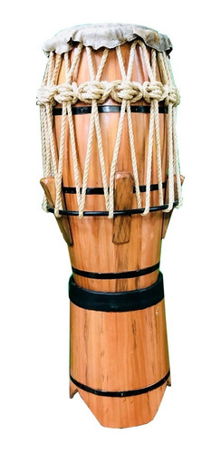
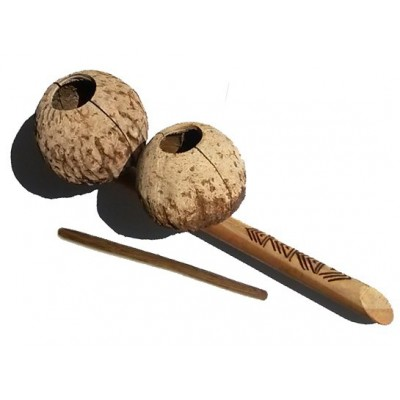

<!DOCTYPE html>
<html lang="pt-br">
<head>
    <meta charset="UTF-8">
    <meta name="viewport" content="width=device-width, initial-scale=1.0">
    <title>Página Inicial</title>
    <link rel="stylesheet" href="style.css">
    <link rel="stylesheet" type="text/css" href="seuarquivo.css">
</head>
<body>
    <header>
    
    </header>
    <div class="conteudo">
        </div>
    </header>
</body>
</html>
    <style>
        .secoes {
            display: flex;
            justify-content: space-between;
        }
        .secao {
            width: calc(33.33% - 20px); /* 20px de margem entre as seções */
            padding: 10px;
            border: 1px solid #fdfdfd;
        }
        .conteudo {
            text-align: center;
        }
/* Estilo para a seção de botões */
.botoes-container {
    text-align: center; /* Alinha os botões ao centro */
    margin-top: 20px; /* Espaçamento superior entre a seção de botões e o conteúdo */
}
    </style>
        </section>
        <div class="secoes">
            <section class="secao">
                <div class="conteudo">
                    <div class="image-gallery">
                        
                    <div>
                        <h2>Atabaque</h2>
                <p>O atabaque é um tambor usado na capoeira para fornecer ritmo e música durante as rodas de capoeira. É essencial para a atmosfera da roda.</p>
            </section>
            <section class="secao">
                <div class="conteudo">
                    <div class="image-gallery">
            
                        
                        <div class="conteudo">
                            <h2>Berimbau</h2>
                            <p>O berimbau é um dos instrumentos mais icônicos da capoeira. Ele é composto por uma vara, uma cabaça e uma corda, e é usado para marcar o ritmo do jogo.</p>
                </div>
            </section>
            <section class="secao">
                <div class="conteudo">
                    <div class="image-gallery">
                        
                        <div class="conteudo">
                <h2>Agogô</h2>
            <p>O agogô é um instrumento de percussão composto por duas campânulas de metal que produzem diferentes tons. É usado para criar ritmo e tocar variações rítmicas na música da capoeira..</p>
                </div>
                <div class="1c7ea_027c7c6a900f4065a0dd0f019daecbe9~mv2.gif">
                </div>
            </section>
        </div>
        <div class="botoes-container">
            <a href="index.html" class="botao-extra">Pagina inicial</a>
            <a href="historia.html" class="botao-extra">historia</a>
            <a href="instrumentos.html" class="botao-extra">instrumento</a>
            <a href="cordas.html" class="botao-extra">cordas</a>
            <a href="iniciantes.html" class="botao-extra">iniciantes</a>
        </div>
            <style>
                 </style>
        </body>
        </html>
        